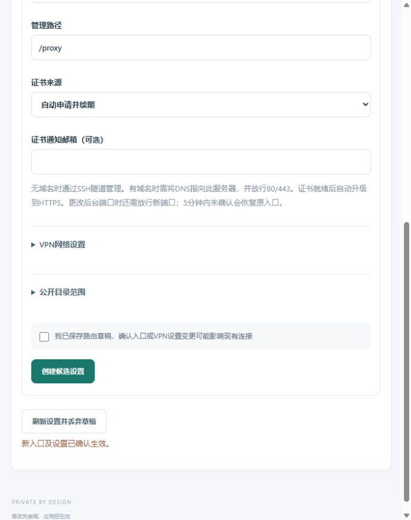
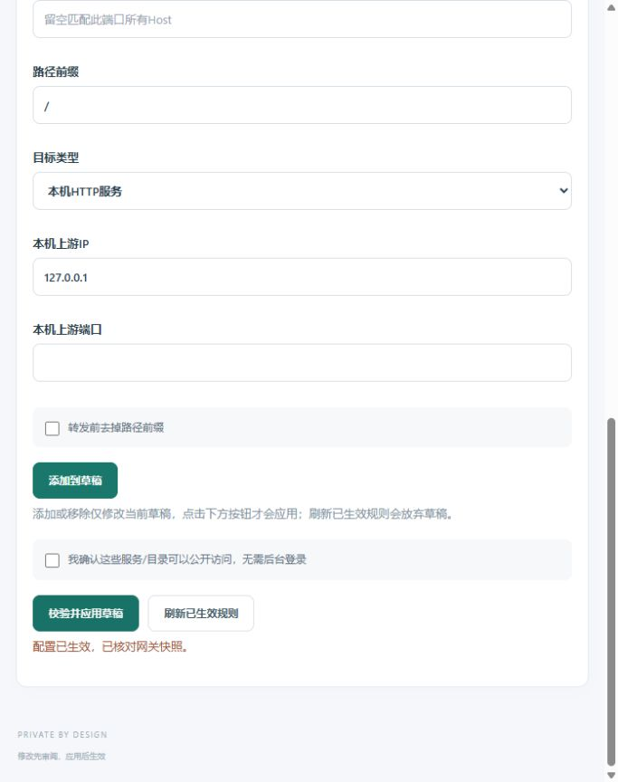

目标与现状
目标为 https://qin-xin.top/proxy，规范地址/proxy/；新入口验证并确认后关闭8007。现有前端使用根路径资源和/api请求，入口模型只有admin_port，候选确认仅比较Origin，不能直接用普通业务反代完成安全迁移。强口令、TOTP、恢复码、会话内存存储和近期双因素写入保护保持现有契约。
架构设计
- 新增显式admin_path设置，空值兼容独立端口，非空启用当前授权域名443上的管理路径。只接受规范非根前缀，拒绝机器人声明与业务路径冲突；管理路径按段匹配，/proxy-other不进入后台。
- 管理路径作为网关内置受保护路由优先于业务匹配，不允许普通规则遮蔽。网关保留完整路径转发到本机control；控制服务按一次一致的端点策略快照验证Host、Origin和路径，再剥离已授权前缀交给原API/静态路由。公网根/api不能借新Origin访问控制面，SSH回环根入口保留。
- 静态CSS/模块使用相对URL；API基址取自auth模块自身URL，不受业务页面或document.baseURI改写。/proxy重定向/proxy/并保留查询参数。管理API仍不使用Cookie，不把其他应用Cookie当成认证。
- 复用现有五分钟候选机制：旧8007与新/proxy并存，新的TLS和资源/API可用后，由所有者在新入口近期双因素登录并确认。确认使用实际命中的端点身份（Origin加路径），同Origin的旧路径也不能代替新路径确认。超时自动撤回候选，SSH恢复保持可用。
- 首次准备管理路径设置即提高数据库最低格式到5，防止旧程序忽略路径后恢复错误入口；备份/冷还原支持格式5。需要回退至格式4时，先用兼容版本撤销管理路径、停止control，再由独占维护工具核验没有待完成修订和格式5特性后降低兼容格式；不恢复旧认证库或计数器。
同一域名的不同路径共享浏览器Origin，路径不是独立的浏览器安全域。此次保留现有Bearer与双因素验证，不新增跨站信任、Cookie自动登录或根/api暴露。
开发与验证顺序
| 阶段 | 交付与退出条件 |
|---|---|
| 1 契约与可行性 | 确认/proxy冲突、资产/API根路径和原入口切换行为；本文件先于实现落地。 |
| 2 模型与控制面 | 路径校验、端点策略、相对资产/API、实际端点确认、格式5及安全回退；保留旧部署兼容。 |
| 3 真实正反向 | Caddy下/proxy规范跳转、资产和模块、正确/错误Host与Origin、未登录/过期MFA拒绝、根/api与相邻路径拒绝；旧入口确认新路径失败，候选到期/撤回/重启恢复；/futures与根站点不漂移。 |
| 4 候选发布 | 三模块回归、漏洞扫描、真实生命周期和指定断言的定向破坏全部通过；匿名固定摘要拉取后只升级必要组件。 |
| 5 受控迁移 | 备份并保存当前业务/认证/镜像，生成/proxy候选，所有者新入口登录确认；确认后8007关闭，VPN、证书与业务保留。 |
| 6 最终观察 | /futures独立验收、8001撤销、/proxy确认及8007关闭后，按最终实际镜像/路径重开完整24小时，不拼接旧窗口。 |
模型、控制面、前端、格式5及回退工具已实现；三模块测试与vet通过。真实Caddy首次及重启两阶段均验证了路径资源、真实登录、错误口令/来源拒绝、/futures保留和确认后旧端口释放。鉴权6项、设置10项定向破坏均命中指定断言。完整30项CI、三镜像匿名拉取及control单组件升级均已完成；账号、规则、VPN和其他容器保持。所有者已从/proxy近期双因素登录并确认，修订23正式启用管理路径，8007停止监听；期货正式登录/数据/退出验收通过后，修订24撤销8001。/futures规则已在修订20生效并通过公网正反向探针。
发布与部署证据
完整CI · 匿名固定镜像 · 单组件部署与保留检查。新入口迁移已确认；8007与8001均停止监听，/proxy资源、401/403保护、根欢迎页、/futures及Trojan正反向复验通过。最终配置的独立24小时观察已启动，尚未完成。
最终现场确认
修订24和监听证据 · 公网正反向 · Trojan正反向。所有容器ID和启动时间均与生成候选时一致。


最终配置24小时观察已启动
北京时间 2026-11-12 16:26:48 启动，预计 2026-11-13 16:26:48 结束。探针绑定实际混合镜像、修订24、管理路径/proxy及期货路径/futures；8007/8001已关闭。Linux正反向判定单测、实际短时冒烟和首轮HTTP/TLS与Trojan正反检查通过。观察仍在运行，尚未完成，不计为24小时通过；原6次失败与195次未满窗口继续保留。